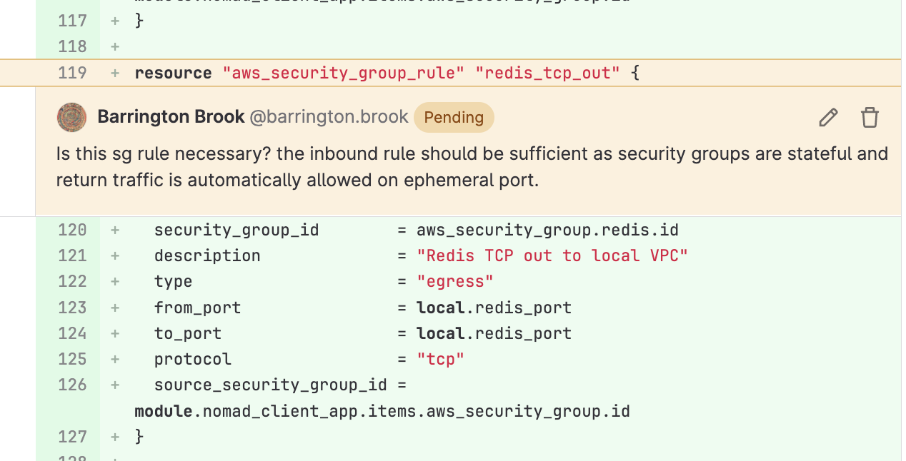

Introduction
Date: 28 Mar 23
In our team, peer review is an important part of our development process so we can ensure that we maintain a high level of quality for the code we commit since we are continually improving our systems and make a large number of changes in a relatively short space of time. It is of paramount importance that when reviewing another persons work that we are mindful of the principles of a blameless culture. This not only fosters a psychologically comfortable context in which people can work it also the right mindset to adopt from a technical point of view. For example, if a person were to make a breaking change, the focus should not be on what this team member did wrong but how this mistake was not captured by our processes before being able do any damage.
This is an example of a comment I made to highlight what I thought might be unnecessary code, emphasis is on constructive criticism and that I open to allowing the committer to respond that there is a particular reason that they included this: 